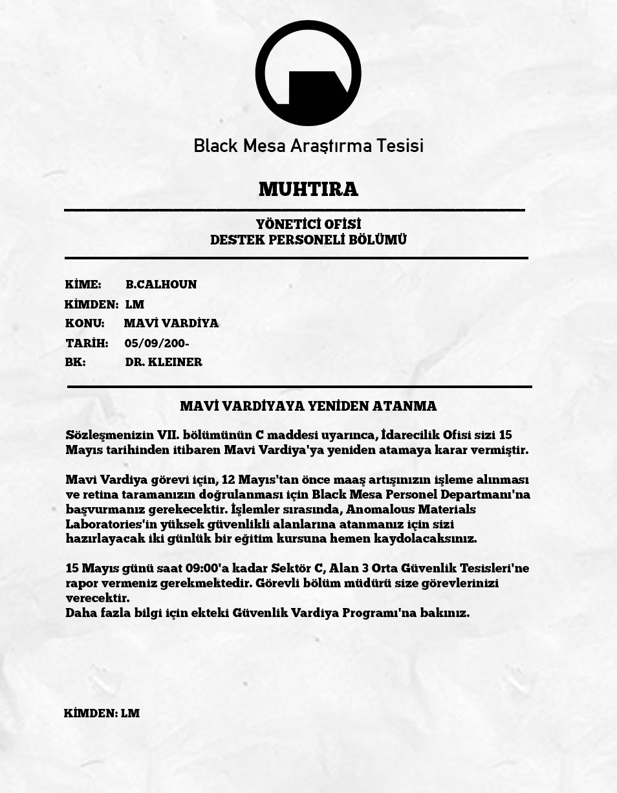
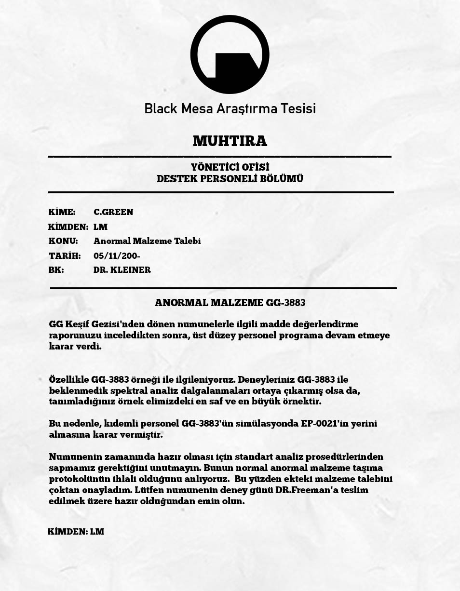

EVRENİN TARİHÇESİ
// Black Mesa Kazasından Şehir 17'nin Çöküşüne (YAPIMI DEVAM EDİYOR) //
Freeman'a Davet
Freeman'ın M.I.T'deki Akıl Hocası olan Isaac Kleiner'ın önerisiyle Black Mesa tarafından, Innsbruck Üniversitesi Deneysel Fizik Enstitüsünde çalışan Doktor Gordon Freeman'a resmi bir iş teklifi yapılır.
 İncelemek için tıklayın
İncelemek için tıklayın
Barney'e görev emri
Black Mesa Yönetici Ofisinden L.M. adlı bir yönetici, Güvenlik görevlisi Barney Calhoun'a 15 Mayıstan itibaren Mavi Vardiya bölgesinde görev yapacağına ve bunun için bir an önce Sektör C Güvenlik tesislerine rapor vermesi gerektiğini bildiren bir Muhtıra gönderir.

İncelemek için tıklayınTAŞIN GETİRİLİŞİ
Black Mesa Yönetici Ofisinden L.M. adlı bir yönetici, Anormal Materyaller Laboratuvarından Collete Green'e GG Keşif gezilerinden getirilen GG-3883 ile ilgili incelemelerin ve testlerin hızlanması gerektiğini ve AntiKütle Spektrometresinde EP-0021'in yerine GG-3883'ün kullanılmasının yönetim tarafından istendiğini belirten bir muhtıra yollar.

İncelemek için tıklayınSistemler Çöküşte
Black Mesa'daki Bilgisayar ve güvenlik sistemleri dahil pek çok bilimsel ekipman ve sistem arıza vermeye başladı.
Rezonans Çağlayanı
New Mexico'daki Black Mesa Araştırma Tesisi'nde çalışan teorik fizikçi Gordon Freeman, Anti-Kütle Spektrometresi'ne yüksek saflığa sahip bir Xen kristali olan GG-3883'ü yerleştirerek felakete yol açtı. "Resonance Cascade" (Rezonans Çağlayanı) adı verilen bu olay, boyutlar arası bir yırtık oluşturarak uzaylı canlıların doğrudan Dünya'ya ışınlanmasına sebep oldu.
Black Mesa'ya Müdahale!
Rezonans Çağlayananından kısa bir süre sonra ABD Hükümeti kazanın farkına varır varmaz Black Mesa ve etrafındaki 150 millik bir bölgeyi karantina altına alarak olayları örtbas etmek için H.E.C.U kuvvetlerini acil bir şekilde bölgeye yönlendirdi.
Freeman Yer Yüzüne çıkıyor.
Tehlike giysisi sayesinde kazadan sağ çıkan ve olayların merkezinde olan Doktor Gordon Freeman, yardım çağırmak için bir şekilde yüzeye çıktı. Birkaç askerin bilim insanlarını öldürdüğünü gören Freeman onların kendilerini ''kurtarmaya'' gelmediğini anlamıştı. Bir bilim adamından aldığı talimatlar sonucunda Black Mesa Sektör F'de yer alan Lambda Kompleksine doğru yolculuğuna başladı.
ÖNEMLİ FIRLATMA
Bilim adamları kazanın sebep olduğu boyutsal yarıkları kapatmak için uzaya bir uydu roketi fırlatmayı hedefledi ama H.E.C.U Askerleri tesisteki tüm roket rampalarını kitlediği için Gordon Freeman bu görevi manuel olarak devralır ve roketi fırlatmayı başarır ve bu roket xen'e giden portalı kapatmayı başarır ancak daha sonradan portalların diğer tarafta akıl sahibi bir varlık tarafından açık tutulduğu ortaya çıkar.
BLACK-OPS
ABD Hükümeti emriyle H.E.C.U Kuvvetleri Black Mesa'daki tüm şahitleri ''susturmaya'' başlamıştı ancak H.E.C.U kuvvetleri bu emri tam olarak yerine getiremeyince ABD Hükümeti bu sefer CIA'e bağlı Black-Ops ekiplerini tam yetkiyle Black Mesa'ya gönderdi.
Freeman kurtulup lambda kompleks'e olan yolculuğuna devam ediyor.
Tarihi Yok Oluşa doğru
Black Mesaya gelen Black-OPS timleri beraberinde tesise bir nükleer başlık getirdiler ve bunu patlatmak üzerelerken H.E.C.U Askeri Kuvvetlerinin Mensubu Onbaşı Adrian Shephard bunu engelledi.
YAKINDA!
Dostum biliyorsun verileri işlemek ve Türkçeye çevirmek zaman alıyor kusura bakma :/